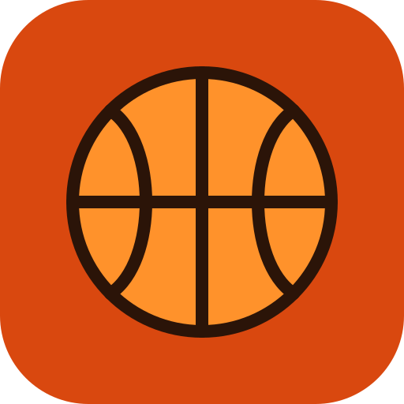

Μετάβαση στο περιεχόμενο

Euroleague Fantasy
Έλεγχος…
◐
Ο server ξυπνάει (δωρεάν πλάνο). Το πρώτο αίτημα μπορεί να πάρει έως ένα λεπτό…
Κατάταξη
Παίκτης
Ρόστερ
Διαχείριση
Η εφαρμογή χρειάζεται JavaScript.